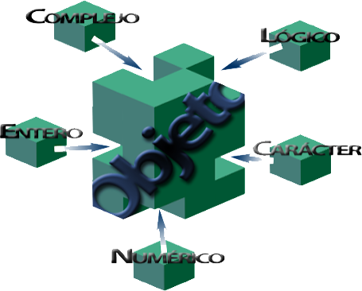
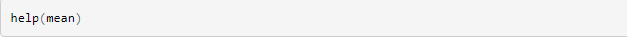
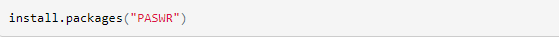

R
Sintaxis del lenguaje de programación R
La sintaxis en R es muy similar a la de otros lenguajes de programación como JAVA o C. Las normas básicas que definen la sintaxis de R son:
No se tienen en cuenta los espacios en blancos: podemos o no dejar espacios para que el código se puede ordenar de forma adecuada y poder entenderse.
Se distinguen las mayúsculas y minúsculas: para variables en el código, podemos crear diferentes variables con nombres iguales pero alternando mayúsculas y minúsculas.
Se pueden incluir comentarios: como vimos anteriormente los comentarios se utilizan para añadir información en el código.
No es necesario terminar cada sentencia con el carácter de punto y coma (;): en la mayoría de lenguajes de programación,
es obligatorio terminar cada sentencia con este carácter. En en cambio R podemos o no terminar de esta forma.
Lenguaje orientado a objetos: todo en R son objetos, las variables, datos, funciones y resultados, que se generan en R son objetos estos se modifican o manipulan con operadores o funciones (que a su vez son objetos).
R se divide en cinco clases básicas o atómicas, estas son bloques de construcción o elementos que conforman a los objetos, son 5 clases principales: numérica o doble, entero, complejo, lógico y de carácter.

Simbolos del lenguaje de programación Haskell
El editor de comandos (“prompt”)
Debajo del mensaje de apertura de la consola de R se encuentra el “prompt” que es el símbolo “>” (mayor que). Las expresiones en R se escriben
directamente a continuación del “prompt” en la consola de R.
Si se escribe e intenta ejecutar un comando que se ha escrito en forma incompleta, el programa presenta un “+” que es el prompt de continuación.
Al cerrar el programa o al teclear “q( )” nos preguntará si desea salvar los datos de esta sesión de trabajo. Puede responder: yes (si),
o no (no) o cancel (cancelar) pulsando respectivamente las letras y, n o c.
En cada caso respectivamente: salvará los datos antes de terminar, o terminará sin salvar, o volverá a la sesión de R.
Los datos que se salvan estarán disponibles en la siguiente sesión de R.
Es importante saber que el nombre de un objeto debe comenzar con una letra (A hasta Z, o, a hasta z) y puede además incluir letras,
dígitos (0-9) o puntos (.). R discrimina entre letras mayúsculas y minúsculas para el nombre de un objeto, de tal manera que x y X se
refiere a objetos diferentes.
Función help (ayuda)
R es un lenguaje funcional, esto es, realiza las tareas a través de funciones. La primera función que necesitamos conocer es la que nos
proporciona la ayuda del programa, esta es “help”.

Asignaciones
Al igual que ocurre con otros lenguajes de programación R asigna nombres a los diversos objetos (tales como variables o resultados de operaciones).
Esto se consigue mediante el símbolo: “< –” ; “– >” ; o , “=” .
Paquetes
Como ya se ha dicho, R consta de un sistema base de librerías y de un conjunto de paquetes adicionales que extienden su funcionalidad.
En esta sección vamos a ver como se anexan (instalan) los paquetes adicionales.
Tenemos que tener en cuenta que la instalación depende del sistema operativo del computador; hay varias formas de instalar un paquete:
El método más sencillo consiste en es hacerlo directamente desde R, mediante la función:
install:packages( )
Después de haber instalado la librería en el programa, para poder utilizarla debemos descargar el paquete. La forma más común de hacerlo es desde el
menú Paquetes > cargar paquete …; entonces aparecerá una lista con todos las librerías instaladas y nos pedirá que instalemos una de ellas,
simplemente seleccionando una la tendremos operativa.

A que tipo de paradigma pertenece?
El lenguaje R es un ejemplo de paradigmas de programación como:
Paradigma Vectorial
Paradigma Imperativo
Paradigma Funcional
Paradigma Procedural
Paradigma Orientado a obejtos
Aplicación a descargar para editar y ejecutar
Se puede descargar el compilador oficial de R en el siguiente link: Aqui
Ejemplo de programa
Factorial de N
1 # take input from the user
2 num = as.integer( readline( prompt = "Enter a number: "))
3 factorial = 1
4
5 # check is the number is negative, positive or zero
6 if (num < 0) {
7 print(" Sorry, factorial does not exist for negative numbers ")
8 } else if (num == 0) {
9 print("The factorial of 0 is 1")
10 } else {
11 for (i in 1: num) {
12 factorial = factorial * i
13 }
14 print( paste(" The factorial of ", num , " is ", factorial))
15 }